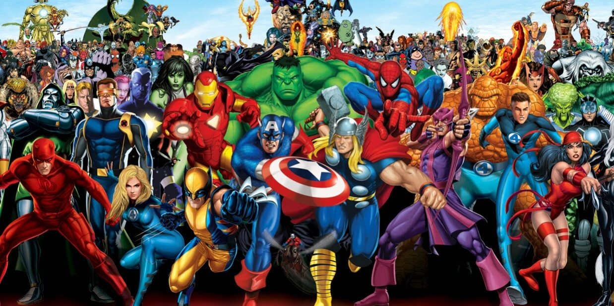
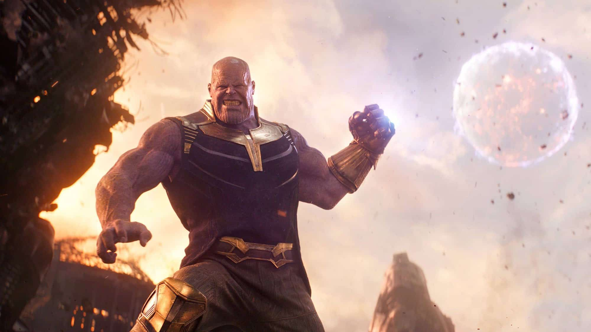
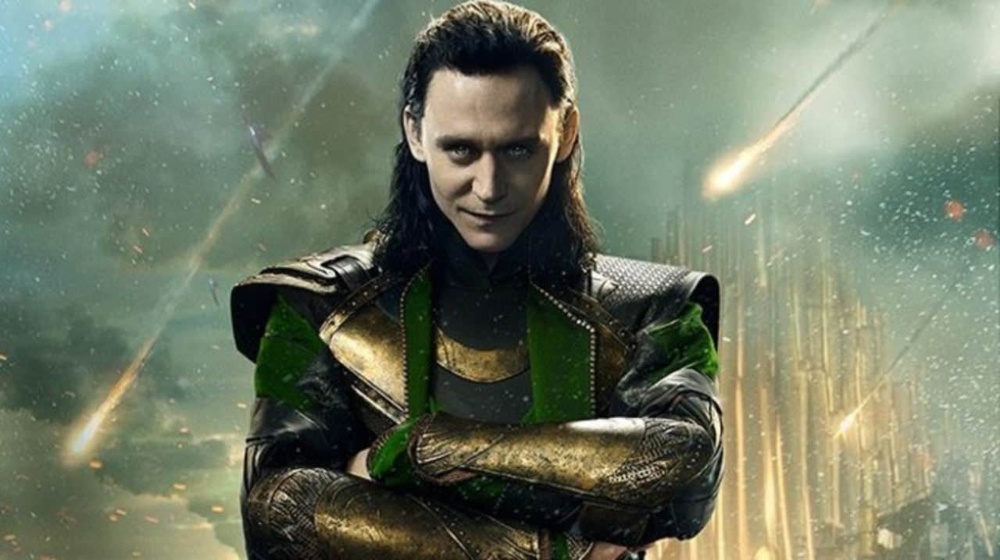
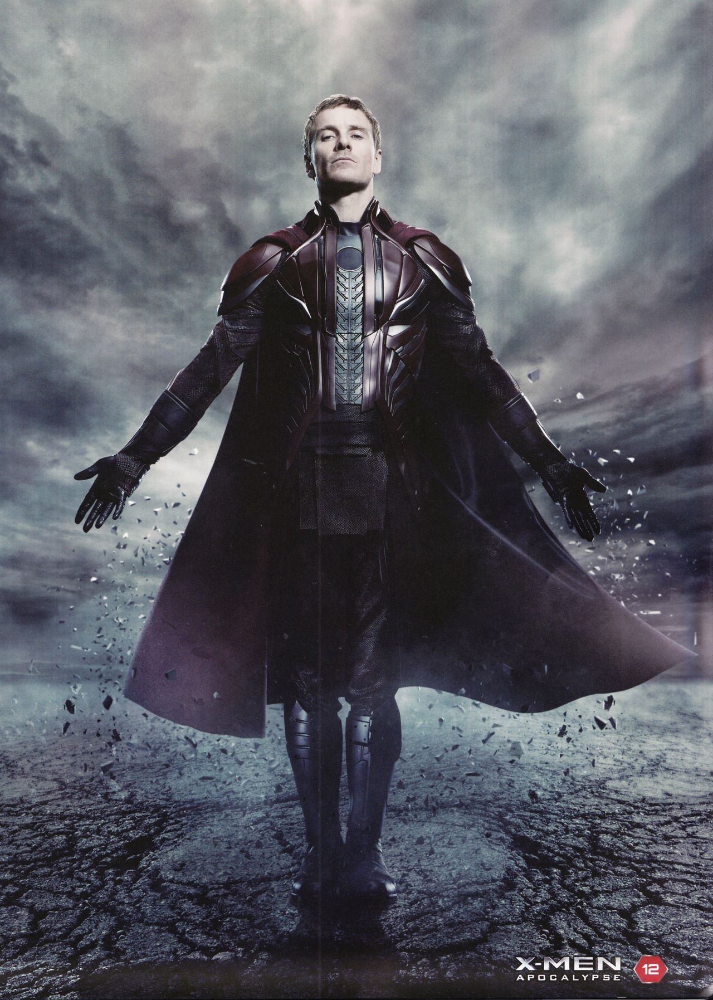

Personagens da Marvel: São heróis com histórias diversas, cada um com habilidades únicas. A maioria luta contra vilões e busca proteger o universo das ameaças. A Marvel reúne heróis com superpoderes, habilidades especiais e até armamentos avançados, enfrentando desafios tanto no mundo real quanto no cósmico.
Homem-Aranha (Peter Parker):
História: Peter Parker era um jovem estudante até ser mordido por uma aranha radioativa, adquirindo habilidades extraordinárias. Após a morte de seu tio Ben, Peter jura usar seus poderes para proteger os inocentes.
Habilidades: Superforça, agilidade, reflexos aprimorados, habilidade de se balançar com teias e uma picada venenosa. Além disso, ele possui um "sentido aranha" que alerta para perigos iminentes.
História: Peter Parker era um jovem estudante até ser mordido por uma aranha radioativa, adquirindo habilidades extraordinárias. Após a morte de seu tio Ben, Peter jura usar seus poderes para proteger os inocentes.
Habilidades: Superforça, agilidade, reflexos aprimorados, habilidade de se balançar com teias e uma picada venenosa. Além disso, ele possui um "sentido aranha" que alerta para perigos iminentes.

Homem de Ferro (Tony Stark):
História: Tony Stark é um bilionário gênio da engenharia e empresário. Após ser sequestrado por inimigos, ele constrói uma armadura para escapar e, posteriormente, usa suas invenções para proteger o mundo como o Homem de Ferro.
Habilidades: Superinteligência, habilidade de criar e controlar tecnologia avançada. Sua armadura oferece superforça, voo, resistência, e uma grande variedade de armas, incluindo raios repulsores.
História: Tony Stark é um bilionário gênio da engenharia e empresário. Após ser sequestrado por inimigos, ele constrói uma armadura para escapar e, posteriormente, usa suas invenções para proteger o mundo como o Homem de Ferro.
Habilidades: Superinteligência, habilidade de criar e controlar tecnologia avançada. Sua armadura oferece superforça, voo, resistência, e uma grande variedade de armas, incluindo raios repulsores.

Homem-Formiga (Scott Lang):
História: Scott Lang é um ex-ladrão que rouba o traje de Homem-Formiga criado por Hank Pym. Com o traje, ele ganha a capacidade de mudar de tamanho e utiliza seus poderes para lutar contra o mal e proteger sua filha.
Habilidades: Capacidade de diminuir seu tamanho até o tamanho de uma formiga, sem perder força. Também pode aumentar de tamanho, tornando-se gigantesco. O traje também possui funções de aumento de resistência e agilidade.
História: Scott Lang é um ex-ladrão que rouba o traje de Homem-Formiga criado por Hank Pym. Com o traje, ele ganha a capacidade de mudar de tamanho e utiliza seus poderes para lutar contra o mal e proteger sua filha.
Habilidades: Capacidade de diminuir seu tamanho até o tamanho de uma formiga, sem perder força. Também pode aumentar de tamanho, tornando-se gigantesco. O traje também possui funções de aumento de resistência e agilidade.

Thanos:
História: Thanos é um dos vilões mais poderosos do universo. Ele é um Titã louco que busca as Joias do Infinito para conquistar o universo, acreditando que a destruição em larga escala trará equilíbrio.
Habilidades: Força sobre-humana, resistência, longevidade. Além disso, é um estrategista brilhante e possui um intelecto aguçado. Quando tem acesso às Joias do Infinito, suas habilidades aumentam exponencialmente, permitindo-lhe controlar tempo, espaço, mente, alma, realidade e poder.
História: Thanos é um dos vilões mais poderosos do universo. Ele é um Titã louco que busca as Joias do Infinito para conquistar o universo, acreditando que a destruição em larga escala trará equilíbrio.
Habilidades: Força sobre-humana, resistência, longevidade. Além disso, é um estrategista brilhante e possui um intelecto aguçado. Quando tem acesso às Joias do Infinito, suas habilidades aumentam exponencialmente, permitindo-lhe controlar tempo, espaço, mente, alma, realidade e poder.

Loki:
História: Loki é o deus da trapaça, irmão adotivo de Thor. Inicialmente vilão, Loki busca o poder e tenta controlar Asgard, muitas vezes usando de astúcia, engano e magia para alcançar seus objetivos.
Habilidades: Mestre em magia e manipulação, Loki pode alterar sua aparência, controlar mentes, criar ilusões e lançar feitiços poderosos. Ele é um estrategista brilhante e pode se teletransportar.
História: Loki é o deus da trapaça, irmão adotivo de Thor. Inicialmente vilão, Loki busca o poder e tenta controlar Asgard, muitas vezes usando de astúcia, engano e magia para alcançar seus objetivos.
Habilidades: Mestre em magia e manipulação, Loki pode alterar sua aparência, controlar mentes, criar ilusões e lançar feitiços poderosos. Ele é um estrategista brilhante e pode se teletransportar.

Magneto:
História: Magneto é um dos maiores inimigos dos X-Men. Ele é um mutante com o poder de controlar o magnetismo. Acredita que os mutantes devem dominar os humanos, e seu principal objetivo é proteger a sua espécie.
Habilidades: Magneto possui o poder de manipular metal e controlar o magnetismo. Ele pode gerar campos de força, mover grandes massas metálicas e até criar tempestades de metal. Ele também tem grande inteligência e habilidades de combate.
História: Magneto é um dos maiores inimigos dos X-Men. Ele é um mutante com o poder de controlar o magnetismo. Acredita que os mutantes devem dominar os humanos, e seu principal objetivo é proteger a sua espécie.
Habilidades: Magneto possui o poder de manipular metal e controlar o magnetismo. Ele pode gerar campos de força, mover grandes massas metálicas e até criar tempestades de metal. Ele também tem grande inteligência e habilidades de combate.